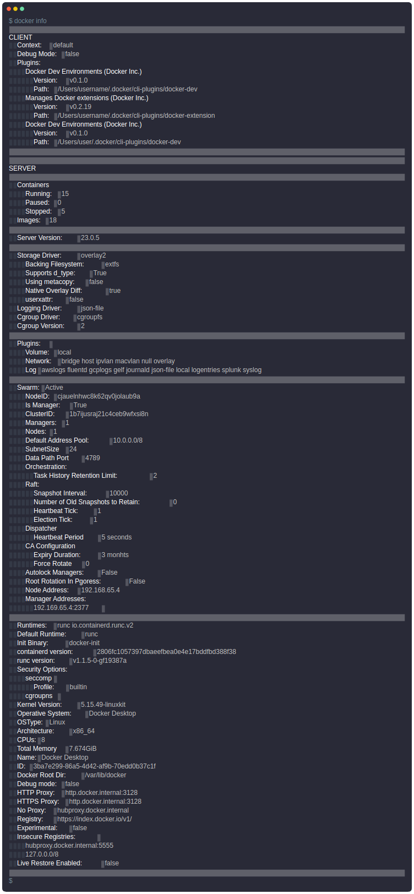
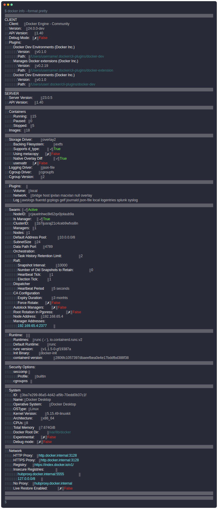
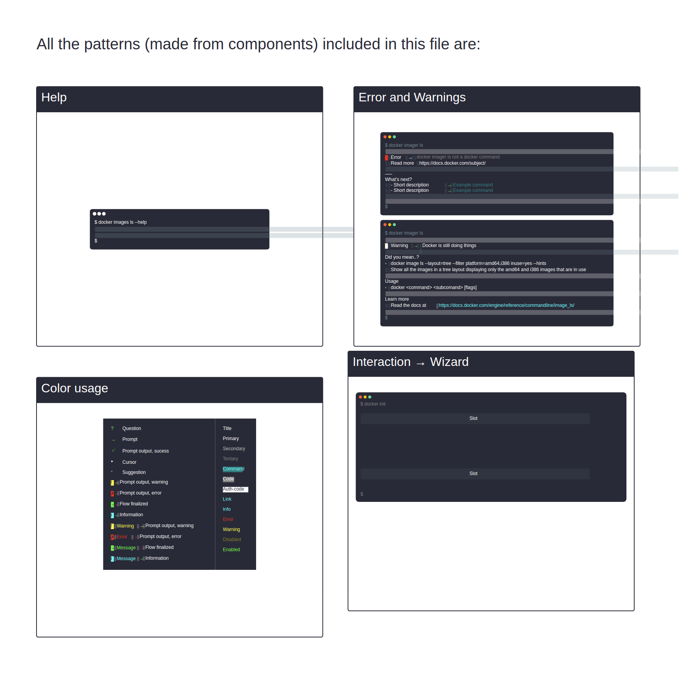
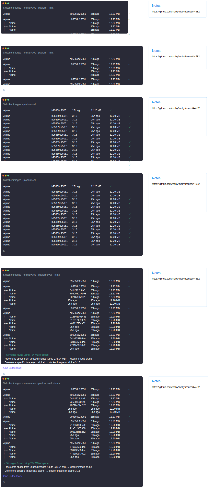

Docker’s first CLI design system, now the organizational standard for terminal surfaces.
Docker · Creator & owner2023–
Sam + internal design teamslearnability · consistency
Context
Docker’s CLI grew organically: inconsistent patterns, styles and terminology across commands, with no shared system for designing terminal experiences. Every team reinvented conventions; users paid in relearning.
Research
The system started with evidence, not taste. DockerCon 2023 research interviewed 10 CLI users and community captains on how they actually read and trust terminal output. In parallel, an audit of Docker's own commands catalogued the drift: inconsistent sectioning, casing, color use, and synonym churn ("service" vs "container" vs "app") across products.
The finding: users don't fear the CLI, they fear inconsistency. Every unexpected format is a small trust tax.
Conceptualization
The first draft (27 Mar 2023) turned the research into a system: command anatomy, section and hierarchy rules, terminology decisions, and a component library for terminal surfaces (tables, key-value blocks, status chips, color semantics for state). The library shipped in Figma (CLI – Design System.fig) so PMs and engineers could reuse patterns instead of inventing them.
The core trade-off: codified conventions constrain one-off command creativity. Exceptions are allowed, but they have to be argued for, which is exactly what turns a style guide into a system.
UX use cases
Each card defines the job, the design response, the objective, the measured outcome, and the trade-off made.
Shared patterns, components and style guidance in the DDS-CLI system.
“Design a new CLI command that feels like Docker”
Objective
Make consistency the default, not a review outcome.
Outcome
Adopted org-wide; products like Docker Offload build on it.
Trade-off
Codified conventions constrain one-off command creativity; exceptions must be argued in.
Company-wide Figma library (CLI – Design System.fig) with documented conventions.
“Reuse proven patterns instead of inventing them”
Objective
Give designers and PMs a starting point that is already right.
Outcome
Became “Docker’s Organizational Standard” for CLI; raises speed for every team, not just Javier’s surfaces.
Trade-off
A library only lives if owned; accepted an ongoing maintenance role as the price of the multiplier.
Naming and structure conventions grounded in the DockerCon 2023 CLI research (10 attendees/captains interviewed).
“Align on terminology and structure”
Objective
End synonym drift across products.
Outcome
Research-led first draft (27 Mar 2023), then the published system and CLI roadmap.
Trade-off
Consensus-driven naming is slower than one team’s fiat, but adoption is the point.
Adoption is the metric for a design system: it became Docker's organizational standard for CLI surfaces, products like Docker Offload build on it, and the before/after of docker info is the artifact reviewers point to. Leverage-shaped impact resists single-number attribution, so it's measured in reuse, not clicks.
Org-wideadoption; Docker Offload builds on it
Standard“Docker’s Organizational Standard” for CLI
Impact is leverage-shaped: it changed how other teams design, which is hard to attribute to a single metric. Sources: Notion DDS-CLI pages, Drive .fig, Slack.
Reflection
A design system is only alive if someone owns it. The maintenance role is the deliverable; the Figma file is just its current snapshot.
Design screens
Exported from the original Figma files with figx.

Before: unstructured docker info output

After: systematized output with clear hierarchy and semantics

Pattern library: reusable terminal components

Step and flow patterns for guided CLI interactions